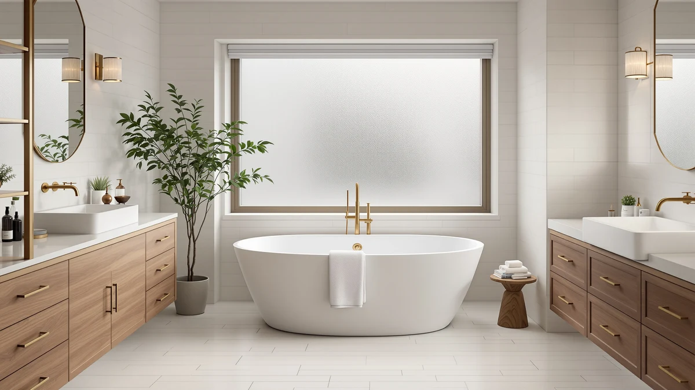

Things to Know Before You Buy
- A freestanding tub needs floor-mounted or wall-mounted plumbing and open space on at least three sides, while a built-in tub uses the alcove plumbing already in place in most bathrooms.
- Built-in tubs cost less in labor since they reuse existing plumbing, while freestanding tubs add a day or two of work to route new supply lines.
- Owners consistently report that freestanding acrylic tubs are easier to wipe down on the outside, while built-in tubs hold heat longer because the surrounding deck insulates the water.
- A built-in tub's deck gives you a stable surface to hold while getting in and out, something a freestanding tub's smooth exterior doesn't offer.
Choosing between a freestanding bathtub vs built in model usually comes down to three questions: how much floor space you have, how much you want to spend on plumbing, and whether you want the tub to anchor the room or disappear into it. A freestanding tub sits on its own, finished on every side, with exposed plumbing that becomes part of the design. A built-in tub tucks into an alcove or deck, finished on one side only, and leans on the surrounding tile or framing to hide the rest.
We compared current Amazon listings, manufacturer spec sheets, and patterns in verified owner reviews for both styles to see where each one holds up and where it falls short. Neither category wins across the board. The right pick depends on your bathroom's layout, your renovation budget, and how much plumbing work you're willing to take on.
Quick Answer
A built-in tub like the 60x32 Inch Built-In Bathtub is the better buy for a standard renovation where you want to reuse existing plumbing and keep costs predictable. A freestanding tub like the ANZZI 55 Inch Acrylic Freestanding wins when the room is built around the tub and you have the floor space and budget for exposed fixtures. Settle the freestanding bathtub vs built in question against your layout before you weigh it against looks.
What is Freestanding Bathtub?
A freestanding bathtub stands on its own in the room, finished on every visible surface because none of it sits against a wall or inside a frame. Most models ship in acrylic, stone resin, or enameled cast iron, and manufacturers finish the underside and exterior to the same gloss as the interior basin since nothing covers it. The ANZZI 55 Inch Acrylic Freestanding, for example, lists a double-wall acrylic shell that keeps water warmer without a surrounding deck to hold heat.
Plumbing sets this category apart from built-in tubs. A freestanding model needs either floor-mounted fixtures that rise up near the tub or a wall-mounted filler positioned above it, and both routes mean new supply lines run through the floor or wall rather than tapping into an existing alcove hookup. That adds a day or two of plumbing work on most jobs compared with a straight swap into an existing bathtub recess.
Floor space is the other constraint. A freestanding tub needs clearance on at least three sides, both for the design to read correctly and for someone to walk around it to clean. In a freestanding bathtub vs built in comparison, this is the category that asks more of your square footage and your renovation budget, and it pays that back in the way it looks.
What is Built In?
A built-in bathtub installs into a three-wall alcove, a deck, or a drop-in frame, with only the front-facing apron finished since the other sides disappear behind tile, framing, or a skirt. The 60x32 Inch Built-In Bathtub and the matching 60x32 Alcove Soaking Bathtub both follow this format: a shell shaped to slide into a standard alcove footprint, with mounting flanges along the back and sides that get sealed against the surrounding wall.
Because most US bathrooms are already plumbed for an alcove tub, a built-in replacement typically reuses the existing supply lines and drain location, which is the main reason this category costs less in labor even when the tub itself is priced close to a freestanding model. The surrounding deck or tile also acts as insulation, so water stays warm longer than in an exposed freestanding shell of similar material.
The tradeoff is flexibility. A built-in tub is bound to the footprint of the alcove it was designed for, so swapping styles later usually means demoing tile or framing rather than simply disconnecting a filler. Weighed against a freestanding tub, a built-in model is the lower-friction side of the freestanding bathtub vs built in choice whenever the bathroom layout already has an alcove sized and plumbed and ready to use.
Head-to-Head: Build Quality & Durability
Material quality drives durability more than category in a freestanding bathtub vs built in comparison, but the two formats wear differently. Acrylic freestanding tubs like the ANZZI 55 Inch Acrylic Freestanding use a double-wall shell that resists flexing under load since there is no surrounding frame to brace it, and reviewers consistently note that the gel-coat finish holds its shine for years before it needs polishing. Stone resin and solid surface freestanding tubs go further, with a dense composite that resists chipping and stays rigid without support.
Built-in tubs lean on their mounting frame and surrounding deck for structural support, which means a well-framed install can feel sturdier underfoot than an unsupported freestanding shell of the same acrylic weight. The 60x32 Alcove Soaking Bathtub's flanges distribute weight across the studs behind the wall rather than the tub's own feet, according to the manufacturer's spec sheet.
The weak point for both styles is the finish, not the shell. Acrylic and fiberglass surfaces on either format can dull or craze after years of harsh cleaners, and owners of both styles report the same fix: a mild non-abrasive cleaner and a polishing kit when scuffs show up. Cast iron, available mostly in freestanding form, outlasts both acrylic categories by decades but weighs 300 pounds or more before water and a bather are added.
Head-to-Head: Price & Value
On the sticker price alone, the two categories land close together. The ANZZI 55 Inch Acrylic Freestanding runs $527.12, and the 60x32 Inch Built-In Bathtub and its alcove sibling both list at $664.99, which puts a well-reviewed freestanding tub below the built-in options compared here rather than above them. The bigger cost gap shows up in installation, not the product line.
A built-in tub that matches an existing alcove typically reuses the current plumbing, so labor stays close to a standard tub swap. A freestanding tub needs new floor or wall plumbing routed to a different position, plus a finished floor underneath and around it since nothing hides the base. Budget for that extra labor before comparing freestanding bathtub vs built in prices on the product page alone, because the installed total tells a different story than the tag.
Head-to-Head: Use Experience
Day to day, the two styles feel different to use before they feel different to look at. A freestanding tub sits lower to the ground in most designs, and reviewers note that the exposed exterior makes wipe-downs faster since there's no caulk line or deck lip collecting grime. The tradeoff is heat retention: without a surrounding deck to insulate the shell, an acrylic freestanding tub cools a few degrees faster over a long soak than the same acrylic in a built-in format.
A built-in tub's deck does double duty as a shelf for soap, a candle, or a book, something a freestanding tub's rim rarely accommodates without an add-on caddy. The surrounding tile or skirt also traps heat, so owners of the 60x32 Alcove Soaking Bathtub report water staying warm noticeably longer than in a comparably sized freestanding acrylic shell.
Getting in and out favors built-in tubs for most households, since the deck gives a stable surface to steady yourself on, while a freestanding tub's smooth exterior offers no grip point. That makes the built-in side of a freestanding bathtub vs built in choice the more forgiving one for households with kids or older adults at home.
When to Choose Freestanding Bathtub
Choose a freestanding tub when the bathroom is large enough to walk around it and the design is meant to put the tub on display rather than tuck it away. The ANZZI 55 Inch Acrylic Freestanding fits this role in a primary bathroom with at least 5 feet of clear width, where the tub becomes the visual anchor rather than one fixture among several.
It also makes sense when the floor is already opened up for other plumbing work, since the added cost of routing a floor-mount or wall-mount filler is smaller when the subfloor is already exposed. Pick freestanding over built-in if resale isn't a near-term concern and the goal is a shape or finish, oval, slipper, stone resin, that an alcove simply can't accommodate. Skip it if the bathroom is under 40 square feet or if a tight renovation budget needs to stretch toward other fixtures first.
When to Choose Built In
Choose a built-in tub when the bathroom already has an alcove plumbed and framed for one, which describes most US primary and secondary bathrooms built in the last 40 years. The 60x32 Inch Built-In Bathtub and the 60x32 Alcove Soaking Bathtub both drop into that existing footprint, which keeps the renovation close to a straight swap instead of a full plumbing relocation.
It's also the stronger pick on a tight budget or timeline, since labor costs stay predictable and the surrounding tile or skirt hides any minor gaps in the install. Households with young kids or anyone who needs a stable surface to hold while getting in and out will find the deck more practical day to day. Choose built-in over freestanding whenever the bathroom's footprint, budget, or household needs point toward reusing what's already there rather than rebuilding around a new fixture.
Our Top Picks
These three tubs show the price and format range buyers are weighing right now between freestanding and built-in styles.

Editor’s Pick
ANZZI 55 Inch Acrylic Freestanding
A double-wall acrylic freestanding tub with a finished exterior on every side, best for bathrooms with room to spare.
$527.12
Check Price on Amazon
Premium Choice
60x32 Inch Built-In Bathtub with
A built-in alcove tub sized to fit standard three-wall footprints without reworking existing plumbing.
$664.99
Check Price on Amazon
Premium Choice
60x32 Alcove Soaking Bathtub with
An alcove soaking tub with extra basin depth for a built-in install that still prioritizes a deep soak.
$664.99
Check Price on AmazonFrequently Asked Questions
Is a freestanding or built-in bathtub better for resale value?
A built-in tub is the safer bet for resale in most homes, since appraisers and buyers expect to see an alcove tub in a secondary bathroom. A freestanding tub can still help resale in a primary suite if the rest of the house already reads as upscale, but in an otherwise standard bathroom it reads as a personal choice rather than a universal upgrade.
How much floor space does a freestanding tub need compared to a built-in?
A built-in tub only needs its own alcove footprint, typically 60 by 30 or 60 by 32 inches, since the surrounding walls do the rest of the work. A freestanding tub needs that same footprint plus clearance on at least three sides, generally an extra 24 to 30 inches of walkway, so owners can access the tub and the plumbing behind it.
Does a built-in tub keep water warmer than a freestanding tub?
Yes, in most cases. The deck and tile surrounding a built-in tub insulate the shell, while a freestanding tub's exposed exterior loses heat to the surrounding air on every side. Owners of alcove tubs like the 60x32 Alcove Soaking Bathtub report noticeably longer warm-soak times than comparable freestanding acrylic models.
Can I convert a built-in tub space into a freestanding tub setup?
Yes, but plan for plumbing work. Converting usually means capping the existing alcove supply lines and drain, then running new floor or wall-mounted lines to the freestanding tub's position, plus finishing the floor where the old tub deck used to sit. It's a bigger project than a straight tub swap, closer to a full bathroom remodel.
Which costs less to install, a freestanding or built-in tub?
A built-in tub costs less to install in nearly every case, since it reuses the existing alcove plumbing instead of requiring new supply lines. A freestanding tub's installed cost runs higher even when the tub itself is priced the same or lower than a built-in model, because the plumbing and floor work add labor hours a straight swap doesn't need.
Final Verdict
There's no universal winner in the freestanding bathtub vs built in decision, but there is a clear way to choose: pick built-in if the bathroom already has a plumbed alcove and predictable costs matter most, and pick freestanding if there's floor space to spare and the tub is meant to be the centerpiece of the room. Among the options compared here, the ANZZI 55 Inch Acrylic Freestanding is the strongest freestanding pick for a typical renovation budget, while the built-in alcove tubs from PeacefulHues cover the lower-friction, lower-labor route for a standard bathroom.